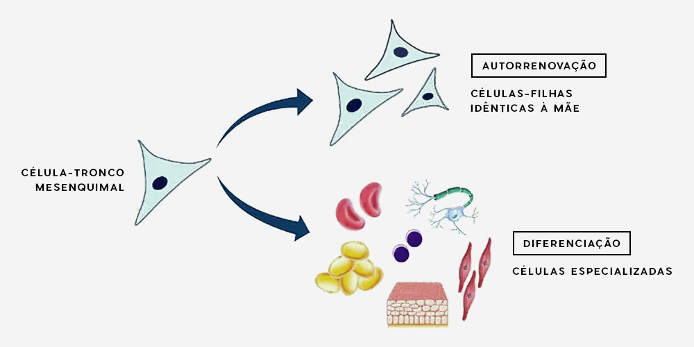

São células com capacidade de se multiplicar e adquirir a
funcionalidade de qualquer tecido, promovendo o restabelecimento do órgão ou lesão, tanto sob o
aspecto estrutural, como funcional. As células-tronco possuem três características fundamentais
que as distinguem de outros tipos celulares: são células indiferenciadas, ou seja, ainda sem
função específica, uma célula “neutra”; podem se diferenciar, ou seja, tornarem-se células com
funções especializadas; são células com capacidade de autorrenovação, gerando células-filhas
idênticas à célula-mãe.

De acordo com sua origem, as células-tronco são divididas em dois
grupos: embrionárias (obtidas durante o estágio embrionário de blastocisto) e células-tronco adultas
(obtidas de tecidos adultos formados). As células-tronco adultas podem ser hematopoiéticas ou
mesenquimais. O tipo de células utilizadas pelo CORA, em parceria com a REGENERA, são as mesenquimais,
que apresentam diferenças significantes das demais, como você pode ver abaixo:
Células-tronco mesenquimais: podem ser obtidas através de
diversas fontes, como parede do cordão umbilical, porção estromal da medula óssea, polpa dentária,
tecido adiposo, entre outras. São células consideradas multipotentes, ou seja, apresentam potencial de
se diferenciar nos mais variados tecidos do organismo, como tecido muscular, nervoso, cartilaginoso,
ósseo etc.
Células-tronco embrionárias: são isoladas a
partir de embriões de, aproximadamente, 5 dias, que estão no estágio denominado blastocisto,
apresentando um grande potencial regenerativo, pois são capazes de se diferenciar em
qualquer célula
do organismo mamífero. Porém, esse alto potencial de diferenciação pode levar a um crescimento
descontrolado (formações tumorais). Existem, ainda, riscos associados à sua utilização terapêutica
devido à
rejeição imunológica e alta capacidade mutagênica. Além disso, o uso de CTE apresenta
controvérsias por conta de questões éticas e legislativas relativas à destruição de embriões para sua
obtenção.
Células-tronco hematopoiéticas: são obtidas
apenas por meio do sangue do cordão umbilical e da porção sanguínea da medula óssea. Essas células já
apresentam um certo comprometimento com a linhagem sanguínea, ou seja, só podem se diferenciar em
células já presentes no sangue.
Há, basicamente, dois tipos de transplantes de células-tronco: o
autólogo e o alogênico (ou heterólogo). A seguir, serão
expostas as vantagens e desvantagens de cada
um deles.
CTM x idade: as
células-tronco presentes nos tecidos do organismo tendem a diminuir constantemente com o passar da
idade. Sendo assim, animais mais velhos que necessitem da terapia com células-tronco encontrarão
dificuldade na sua obtenção de maneira autóloga.
Condição cirúrgica
e anestésica do paciente: há também o problema da condição cirúrgica e anestésica do
paciente. Para o transplante autólogo, é necessário anestesiar o paciente para retirada do fragmento de
tecido adiposo e, muitos deles, por alguma patologia ou mesmo pela idade, não podem se submeter a esse
tipo de procedimento.
Disponibilidade imediata do
material: no transplante autólogo é necessário realizar o cultivo do material em
laboratório, o que leva em torno de 4 semanas. Já no alogênico, existe um banco de células-tronco,
obtidas a partir de doadores saudáveis, favorecendo o implante imediato.
Não há rejeição: as CTM não apresentam em sua superfície
moléculas do complexo de histocompatibilidade do tipo II (MHC classe II) e, por esse motivo, são
consideradas imunocompatíveis, não ocasionando qualquer tipo de rejeição ou efeito colateral quando
injetadas em outro organismo.
A medicina já se encontra em uma nova era, na qual a terapia celular
vem transformando o tratamento de doenças. As células-tronco têm a capacidade de se autorenovarem,
diferenciarem e adquirir a funcionalidade de qualquer
tecido, promovendo o restabelecimento do órgão
ou lesão tanto sob o aspecto estrutural, quanto funcional, podendo ser utilizadas isoladas ou em
conjunto com outros tratamentos.
Uma das indicações para o tratamento na ortopedia é a
osteoartrose, uma doença que resulta da degeneração articular e que causa diferentes graus de dor,
inflamação e dificuldade ou incapacidade locomotora. Tal doença pode advir de
problemas como:
displasia coxofemoral, displasia do cotovelo, ruptura do ligamento cruzado, luxação de patela ou
qualquer outra doença que cause uma instabilidade articular. Geralmente, os animais nessas condições
fazem uso crônico de anti-inflamatórios, analgésicos e condroprotetores.
O grande problema é que
os anti-inflamatórios trazem efeitos colaterais significativos e o paciente acaba desenvolvendo outros
problemas como alterações renais, hepáticas etc.
Para casos de osteoartrose, os benefícios da
terapia com células-tronco são bem reconhecidos. A terapia contribui com a regeneração articular,
estimula a produção de líquido sinovial, promove uma ação anti-inflamatória significativa e prolongada,
que pode chegar a meses ou anos, além de ter um efeito protetor, retardando a evolução da doença
articular degenerativa.
Aproximadamente 80% dos animais apresentam uma importante recuperação na
capacidade funcional das articulações tratadas, resultando em diminuição ou extinção da dor à
manipulação, maior mobilidade articular e, por conseguinte, melhora na deambulação. Isso permite que o
animal exerça ações as quais antes apresentava dificuldade ou estava impossibilitado, como levantar-se,
andar ou até mesmo correr.
(11)
97269-8589
CORA.ORTOPEDIAVET@GMAIL.COM
RUA PIRAPORA, 167 - PARAÍSO
SÃO
PAULO (SP) - CEP 04008-060
© CORA | TODOS OS DIREITOS RESERVADOS